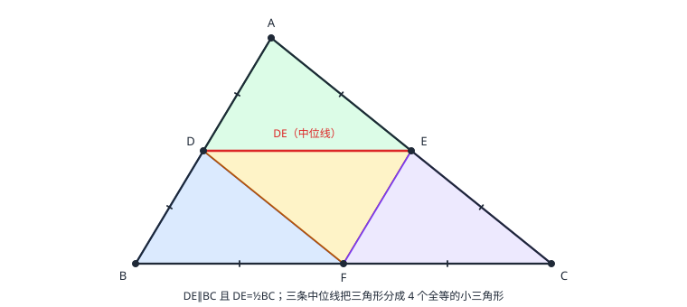

三角形的中位线
连接三角形两边中点的线段叫中位线：平行于第三边，且等于第三边的一半。证明用「倍长」制造全等。三条中位线把三角形分成四个全等的小三角形，周长减半、面积四分之一——量不到的距离用中位线折半来测。
| 所属主题 | 三角形 |
|---|---|
| 所属模块 | 几何 |
| 课标学段 | 第四学段（7~9 年级） |
| 前置知识 | 三角形的基本性质、全等三角形 |
| 核心素养 | 推理能力几何直观模型观念 |
教材定位
人民教育出版社《人教版（2024版）义务教育教科书·数学》
八年级上册第13章 三角形13.2 与三角形有关的线段
落在八上 13.2「与三角形有关的线段」中的中线，以及 15.3 等腰三角形的中线性质。中位线定理教材未单列，本篇在「倍长中线」的证明之外补出中点三角形与面积分割结论。
说明
连接三角形两边中点的线段叫中位线。一个三角形有三条中位线。核心性质：中位线平行于第三边，并且等于第三边的一半。这条性质同时给出「位置关系」（平行 → 角相等）和「数量关系」（长度减半），是几何里少见的双料工具——所以见「两个中点」就连中位线，几乎是条件反射。
中位线与中线是两回事：中位线连两个中点，中线连顶点与对边中点；一个三角形各有三条，互不重合。三条中位线围出的中点三角形，每条边都是原三角形对应边的一半，三个角与原三角形的对应角相等（内错角），周长是原三角形的一半、面积是四分之一；顺次连接三边中点，把原三角形分成四个全等的小三角形。
使用场景
量不到的距离折半测：河宽、湖对岸两点（无法直达）——在可达的一侧取一点构成三角形，量两条可达边的中点连线，翻倍即得真距离。这是中位线最经典的应用场景。
等分三角形地块：把一块三角形田地分成面积相等（甚至形状全等）的四块——连接三边中点即可，四块全等，分界笔直、面积精确相等，比分对角线公平。
注意点
中位线≠中线：中位线连「两边的中点」，中线连「顶点与对边中点」。题目里「连接 AD（D 是 BC 中点）」是中线，「连接 DE（D、E 是 AB、AC 中点）」才是中位线——两者混用，性质全错。
「等于第三边的一半」的方向别记反：中位线是短的那条（DE=BC/2），从 BC 反推时 BC=2DE。以及平行方向：中位线平行的是「第三边」——D、E 所在两边之外的那条边。
证明

图 1：DE 是 △ABC 的中位线，DE∥BC 且 DE=½BC；三条中位线把三角形分成 4 个全等的小三角形
证明
结论 1证中位线性质用「倍长」的办法，造出一对全等三角形。
证法用「倍长」：D、E 分别是 AB、AC 的中点，要证 DE∥BC 且 DE=BC/2。延长 DE 到 F，使 EF=DE，连接 CF。倍长的目的是制造一对全等。（图 1 中红色线段 DE 就是中位线）
关键一步依据是「倍长造等长」这条思路：要证 DE\parallel BC 且 DE=BC/2，直接看不出该用哪条判定，就把 DE 延长到 F 使 EF=DE，DE 与 EF 相等这条现成的相等关系立刻可以拿去凑全等条件。辅助线不是随手加的，是为了补上一条缺失的等量。
结论 2△ADE≌△CFE（SAS）。
在 △ADE 与 △CFE 中：AE=CE（E 是 AC 中点），∠AED=∠CEF（对顶角），DE=FE（所作）——SAS，△ADE≌△CFE。
关键一步依据是 SAS 的三组条件分别来自三个不同地方：AE=CE 来自 E 是 AC 的中点，DE=FE 来自所作的倍长，∠AED=∠CEF 来自对顶角（两条直线的交点处相对的两角）。三组条件正好是两边及其夹角，位置对得上才能全等。
结论 3由全等可得 AD∥CF 且 AD=CF，进而 CF∥DB 且 CF=DB。
由全等得对应角 ∠ADE=∠F，即内错角相等，所以 AD∥CF；又对应边 AD=CF。而 D 是 AB 中点，AD=DB，所以 CF=DB 且 CF∥DB——CF 与 DB 平行且相等。
关键一步依据分两步：先用内错角相等的判定（∠ADE=∠F 是直线 AB 与 CF 被 DE 所截的内错角）由角相等推出 AD∥CF；再用全等的对应边相等得 AD=CF，最后接上 D 是 AB 中点给出的 AD=DB，把 AD=CF 换成 CF=DB。平行与相等两条凑齐，才够用下一条的判定。
结论 4四边形 DBCF 是平行四边形，于是 DF∥BC 且 DF=BC，倍长折半得 DE∥BC 且 DE=BC/2。
由「一组对边平行且相等的四边形是平行四边形」（这条判定的系统学习在 平行四边形，这里提前借用结论）得四边形 DBCF 是平行四边形，于是 DF∥BC 且 DF=BC。而 DE=DF/2（倍长时 EF=DE），所以 DE∥BC 且 DE=BC/2。中点三角形四块全等用 SSS：每个小三角形的三边都是原三角形某三条「半边」的组合。
关键一步依据是「一组对边平行且相等的四边形是平行四边形」这条判定——上一条刚凑齐 CF∥DB 且 CF=DB，正好套进去；这条判定在 平行四边形 才系统学习，这里提前借用结论。平行四边形的对边平行且相等给出 DF∥BC 且 DF=BC，再由 DE=DF/2（倍长时 EF=DE）折半，得 DE∥BC 且 DE=BC/2。
动手实验
在方格纸上任意画一个三角形，标出三边中点，顺次连接：用直尺比一比，每条中位线与第三边平行；量一量，长度恰为一半。剪下四个小三角形叠在一起——完全重合（三边对应相等，SSS）。换一个更歪的三角形再试，结论不变。
解题思路
两个方向的使用：见两个中点 → 连中位线，同时拿到「平行」和「一半」；见中位线 → 翻倍到第三边（BC=2DE），把数量关系放大回原三角形。
计算与证明的接头：中位线的平行给内错角相等，接角度计算；长度减半接方程——设第三边为 x，中位线为 x/2，等量关系现成。测距题的固定流程：构造大三角形（把量不到的边当第三边）→ 取可达两边中点 → 量中位线 → 乘 2。
面积与周长的缩放：中点三角形周长=原周长一半，每个小三角形面积=原面积四分之一；「把三角形四等分」的标准答案是连三中点。四边形问题先连一条对角线拆成两个三角形，再对每个三角形用中位线。
按场景的例题
例 1（场景：测量与工程） 测河宽
河两岸有 A、B 两点，无法直接测量。在河岸可达处取一点 C，使 A、C 与 B、C 都可直达；量得 AC、BC 的中点分别是 M、N，MN=26 米。求河宽 AB。
解：M、N 分别是 △ABC 两边 AC、BC 的中点，MN 是中位线：MN∥AB 且 MN=AB/2。所以 AB=2×MN=2×26=52（米）。只需在可达的一侧量一半长度。
答：河宽 AB 为 52 米。
例 2（场景：图形设计） 三角形花坛四等分
把一块三角形花坛分成四个全等的部分，分给四个班级。怎样分？每个部分的周长和面积与原三角形是什么关系？
解：分别取三边中点 D、E、F，顺次连接 DE、EF、DF。每个小三角形的三边都是原三角形某三边的「一半组合」：例如角上的 △ADE 三边为 AB/2、AC/2、BC/2（DE=BC/2），中间的 △DEF 三边为 BC/2、AB/2、AC/2——四个小三角形三边对应相等，SSS 全等。每个小三角形周长=原周长的一半；面积：四个全等的小三角形平分总面积，每个是原面积的四分之一。
答：连接三边中点；四个小三角形全等，周长各为原一半，面积各为原四分之一。
例 3（场景：竞技与游戏） 攀爬网的横档
攀爬网的支架是 △ABC，D、E 分别是 AB、AC 的中点，横档 DE 长 2.4 米。顶端横杆 BC 多长？
解：DE 是 △ABC 的中位线，BC=2×DE=2×2.4=4.8（米）。同时 DE∥BC，横档与顶端横杆平行，受力方向一致。
答：顶端横杆 BC 长 4.8 米。
常用推论
中点三角形的每条边是原三角形对应边的一半、每个角与原三角形对应角相等（内错角）——周长减半、面积四分之一。
中位线一次提供两种信息：位置（∥第三边 → 内错角相等）与数量（=第三边一半 → 方程）。
四边形问题连对角线拆成三角形后用中位线——「拆大图、连中点」是四边形辅助线的入门套路。
易错点
错把「连接顶点 A 与 BC 中点 D」的线段当中位线。
为什么错那是中线（顶点到对边中点）；中位线连接的是两条边的中点。两者性质完全不同。
正确中位线 = 两中点的连线；中线 = 顶点与对边中点的连线。
错计算时用 DE=BC（忘了减半）。
为什么错性质是「中位线等于第三边的一半」，中位线是短的那条。
正确DE=BC/2，反过来 BC=2DE。
错在四边形里随手连「对边中点的连线」也叫中位线。
为什么错中位线是三角形里的概念；四边形对边中点连线的性质要到中点四边形（梯形与中点四边形）才展开。
正确先连一条对角线把四边形拆成两个三角形，再用三角形的中位线。
直观理解
中位线是第三边的「半价影子」：平行、缩一半，像把底边复印后缩印 50% 平移上来。三条中位线一起出动，把三角形切成四个一模一样的小块——像切三明治，先对角来一刀的思路换成「连三个中点」。量不到的距离，就把它当第三边，量它的影子再翻倍。